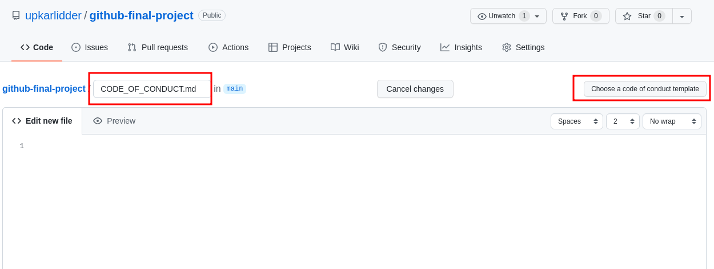

Estimated Time: 60 minutes
You recently got hired as a developer in a micro-finance startup with a mission to empower and provide opportunities to low income individuals. The core team currently uses Subversion (SVN) for managing code. They want to slowly move their code to Git. You are asked to host their sample code to calculate simple interest on GitHub in a new repository as the first step in this journey. You will not only host the script, but also follow best practices introduced in this course and create supporting documents for the open source project including code of conduct, and contributing guidelines. Additionally, the repository should be available to the community under the Apache License 2.0.
After completing this lab you will have demonstrated that you can:
Note: Throughout this lab you will be prompted copy and paste URLs into a notepad and save the notepad on your own device. These URLs will be uploaded for peer review in the Final Submission section of the course. You can use any notepad app to keep note of your URLs.
Create a new GitHub repository called "github-final-project" and make sure that it is public.
Select the Add a README file and Choose a license check boxes. Pick Apache 2.0 License from the drop down.
Click Create repository. Your repository is created and includes the README and LICENSE files. Now you are ready to update your repository files to include useful information for your community.
Save the URL of the repository in a notepad to submit later for peer review.
Add the following information to the file:
ebnf
A calculator that calculates simple interest given principal, annual rate of interest and time period in years.
Input:
p, principal amount
t, time period in years
r, annual rate of interest
Output
simple interest = p*t*r
Save the URL of README.md file in a notepad to submit later for peer review.
Optional - You can continue to update the README file as you develop your project. You can find some ideas for useful README content from the following resources:
A code of conduct helps set ground rules for the behavior of your project’s participants. It defines standards for how to engage in a community.
GitHub provides templates for common codes of conduct to help you quickly add one to your project. To add a code of conduct to your project, complete the following steps:
Add a new file named CODE_OF_CONDUCT.md to the root folder of the repository. The Choose a code of conduct template button is displayed.

Click the Choose a code of conduct template button. On the left side of the page, multiple codes of conduct are listed.
Click "Contributor Covenant" and then click Review and submit to add the file to your project.
Scroll to the bottom of the page. Ensure that the radio button to commit directly to the main branch is selected and click Commit new file. Your project now contains a code of conduct.
Save the URL of CODE_OF_CONDUCT.md file in a notepad to submit later for peer review.
The contribution guidelines tell project participants how to contribute to the project. To add contributions guidelines, complete the following steps:
Create a new file named CONTRIBUTING.md in the root directory of the repository with the following information:
mipsasm
All contributions, bug reports, bug fixes, documentation improvements, enhancements, and ideas are welcome.
Optionally, you can review the following guides for examples of contribution guidelines and update this file.
Create a new file named simple-interest.sh in the root directory of the repository.
Add the following code in the new file:
bash
#!/bin/bash
# This script calculates simple interest given principal,
# annual rate of interest and time period in years.
# Do not use this in production. Sample purpose only.
# Author: Upkar Lidder (IBM)
# Additional Authors:
# <your GitHub username>
# Input:
# p, principal amount
# t, time period in years
# r, annual rate of interest
# Output:
# simple interest = p*t*r
echo "Enter the principal:"
read p
echo "Enter rate of interest per year:"
read r
echo "Enter time period in years:"
read t
s=`expr $p \* $t \* $r / 100`
echo "The simple interest is: "
echo $s
Save the URL of simple-interest.sh file in a notepad to submit later for peer review.
Edit the simple-interest.sh file in GitHub editor using the pencil icon.
Replace <your GitHub username> with your GitHub username.
You will be asked for the same GitHub username in the submission.
Save your notepad file locally for use in your submission later in this course. Check that you have all 7 URLs noted.
| Date | Version | Changed by | Change Description |
|---|---|---|---|
| 2021-12-29 | 0.1 | Upkar Lidder | Initial instructions for the final project |
| 2022-01-13 | 0.2 | Alison Woolford | Updates to instructions for learner clarity |
| 2022-01-22 | 1.0 | Upkar Lidder | Final version |
| 2022-09-25 | 1.0 | CF | Fixed URLs |